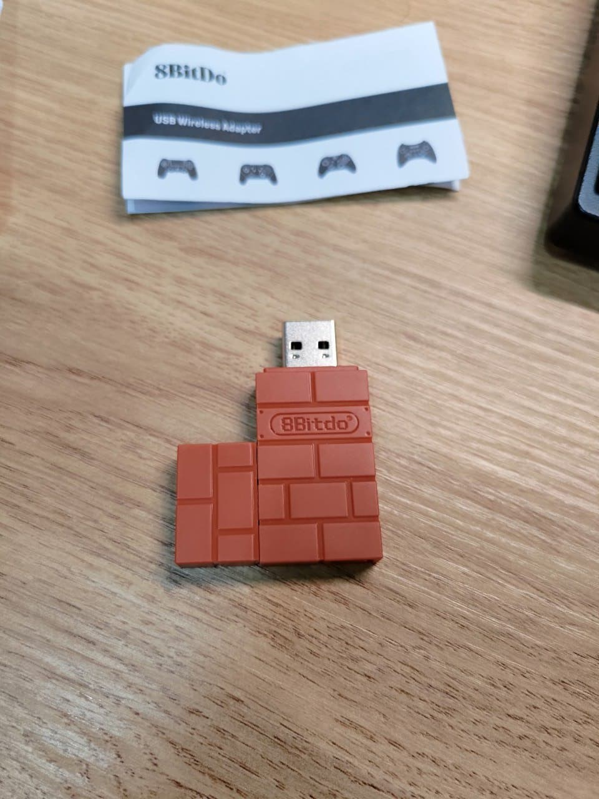

8bitdo 藍芽轉接器
索引
前言⌗
因應近期魔物獵人要發售了，加上朋友豪哥的大力推坑，只好開始尋找能夠花最少錢，但是可以用現有家裡的手把 (PS4, xbox one) 來玩 switch 的手段，於是乎就找到了這一款解決方案，台幣不到400元的藍芽轉接器，可以適配 PS4 手把跟 xbox one 手把。
PS: 家人的switch主機並沒有額外的手把，要用原廠的 joy con 玩動作遊戲，我猜過不了多久我就會移除遊戲，然後手把也跟著壞了。
產品實拍⌗
很簡單的一個小包裝
拔蓋後插進switch的主機，並且在設定打開pro手把連接，就可以了!! 
心得⌗
穩定性、耐久度…甚麼的，還需要時間作驗證，不過不到400元的價格，減少去買pro手把的金額，用現有的手把來進行遊戲，不管怎麼想都是挺划算的。
Read other posts